Chapter 06 · 细胞与基本组织
神经组织
Nervous Tissue · 10 小节 · 21 张切片 · 24 张电镜 · 本地概览 22 张
本章导语
神经组织由神经元和神经胶质细胞组成，前者负责接受与传递信息，后者负责支持、绝缘和营养。本章先建立神经元的基本结构，再分中枢与周围两部分观察：中枢部分看脑皮质的层次和脊髓灰白质的分布，周围部分看脊神经节、交感与副交感神经节的细胞排列，以及周围神经的束状结构和各种感觉神经末梢。学习时把胞体大小、核的形态和细胞排列方式当作三个识别支点。
复习重点
- 神经元胞体、树突、轴突的结构与尼氏体分布
- 大脑皮质与小脑皮质的分层差别
- 脊髓灰质前角与后角细胞形态的差异
- 脊神经节与自主神经节在细胞排列上的区别
- 触觉小体与环层小体的位置和结构特点
易混淆对比
- 脊神经节 vs 交感神经节：节细胞大小与分布不同：前者胞体大而圆且成群，后者胞体小而分散。
- 触觉小体 vs 环层小体：前者位于真皮乳头内、由横列细胞构成，后者在深层、呈多层同心圆板层。
- 灰质 vs 白质：灰质以胞体和树突为主并含尼氏体，白质以有髓神经纤维为主。
阅读提示：本页中文要点为自编复习笔记，不是原站正文的翻译；标本图像为经作者书面许可保存的中分辨率概览，每张本地图像卡片保留 © 署名与原页面链接，“原站本章/原站切片”可查看高倍与结构标注。本站为 Histology Guide 的非官方中文学习改编版，未经其认可或背书。
神经元
NEURON
- 神经元由胞体、树突和轴突组成，是神经组织的功能单位。
- 胞体含尼氏体和神经原纤维，核大而圆、核仁明显。
- 树突接受信息，轴突把冲动传向远处。
- 按突起数目可分为假单极、双极和多极神经元。
低倍镜先找胞体大、核圆而核仁明显的细胞
高倍镜再确认胞质内尼氏体与突起起始部
示意图 1 幅（在线查看）
电镜照片 1 张（在线查看）
中枢神经系统
CENTRAL NERVOUS SYSTEM
- 中枢神经系统由灰质和白质构成，其间无结缔组织分隔。
- 灰质以胞体和树突为主，白质以有髓神经纤维为主。
- 脊髓灰质位于中央呈蝶形，大脑皮质位于表面。
- 神经胶质细胞数量多，起支持、绝缘和营养作用。
低倍镜先分辨灰质与白质的染色深浅
高倍镜再确认胞体密集区与纤维束的走向
脑皮质
Brain
- 大脑皮质多为六层结构，小脑皮质为三层结构。
- 小脑皮质由分子层、浦肯野细胞层和颗粒层组成。
- 高尔基法只显示少数神经元的完整形态。
- 尼氏染色使胞体和树突中的尼氏体呈深蓝色。
低倍镜先辨认皮质分层与白质交界的位置
高倍镜再确认浦肯野细胞层或颗粒层
相关标本 · 2
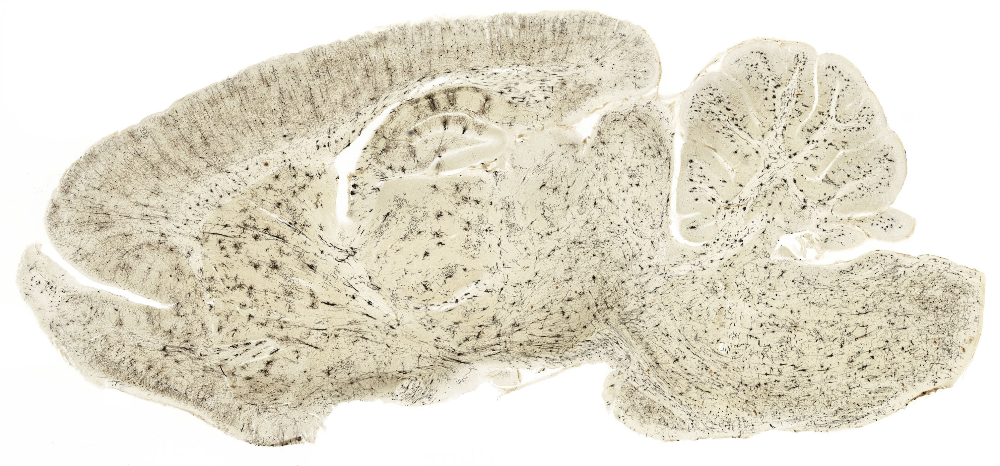
点击图片放大 · 本地概览
MHS 284 Brain
脑（高尔基法）
Golgi's Method
本地概览
3015×1406
图像 © Histology Guide 及/或原始贡献者 · 非商业教育用途，经许可保存；原页面链接见下方
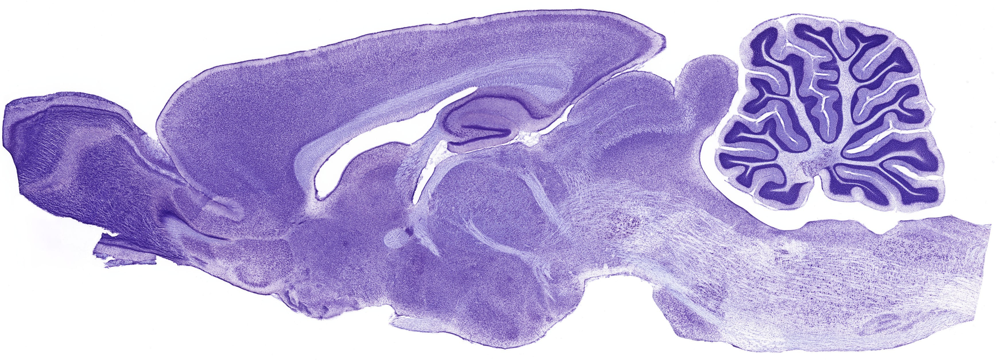
点击图片放大 · 本地概览
MHS 283 Brain
脑（尼氏染色）
Nissl/Chromophil Substance
Cresyl Violet
本地概览
3483×1256
图像 © Histology Guide 及/或原始贡献者 · 非商业教育用途，经许可保存；原页面链接见下方
脊髓
Spinal Cord
- 脊髓横切面中央为蝶形灰质，周围为白质。
- 灰质前角含大型运动神经元，后角含小型中间神经元。
- 白质分前索、后索和侧索，由有髓纤维构成。
- 中央管管壁衬以一层室管膜细胞，向上与脑室相通。
低倍镜先找蝶形灰质与中央管
高倍镜再确认前角大型运动神经元的胞体
易混提示：前角胞体大而多极，后角细胞小而密集。
相关标本 · 3
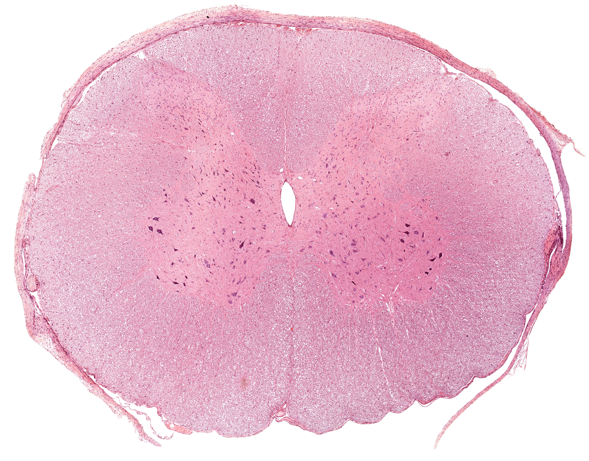
点击图片放大 · 本地概览
MHS 240 Spinal Cord
脊髓
H&E
本地概览
4455×3487
图像 © Histology Guide 及/或原始贡献者 · 非商业教育用途，经许可保存；原页面链接见下方
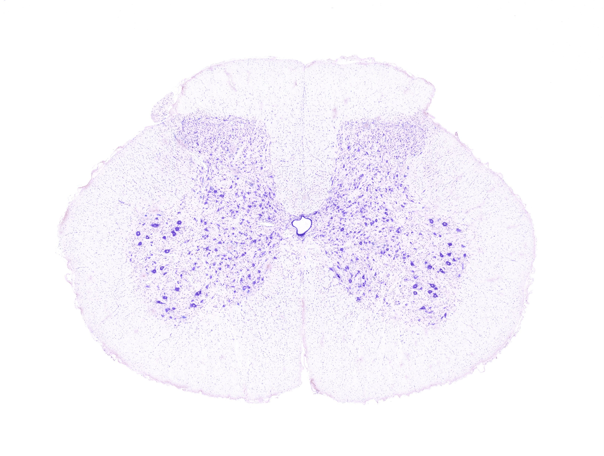
点击图片放大 · 本地概览
UCSF 163 Spinal Cord
脊髓（尼氏染色）
Nissl Substance
Cresyl Violet
本地概览
3244×2450
图像 © Histology Guide 及/或原始贡献者 · 非商业教育用途，经许可保存；原页面链接见下方

点击图片放大 · 本地概览
MH 047 Spinal Cord
脊髓与脊神经节
H&E
本地概览
4440×1990
图像 © Histology Guide 及/或原始贡献者 · 非商业教育用途，经许可保存；原页面链接见下方
周围神经系统
PERIPHERAL NERVOUS SYSTEM
- 周围神经系统包括神经节、神经和神经末梢。
- 神经节外有结缔组织被膜，内含节细胞与卫星细胞。
- 周围神经由有髓和无髓神经纤维束构成。
- 神经末梢分感觉性和运动性两类。
低倍镜先判断标本是神经节还是神经干
高倍镜再确认节细胞排列方式或纤维束结构
脊神经节
Dorsal Root Ganglion
- 节细胞胞体大而圆，成群分布于神经节的周边部。
- 节细胞属假单极神经元，胞体中央有一圆形核。
- 每个节细胞周围有一层卫星细胞包绕。
- 节内神经纤维多从节细胞之间穿行。
低倍镜先找胞体大而圆、核圆核仁明显的细胞群
高倍镜再确认卫星细胞包绕与纤维穿行
易混提示：节细胞成对排列，细胞群之间夹有纤维束。
相关标本 · 4
点击图片放大 · 本地概览
MH 047 Spinal Cord
脊髓与脊神经节
Dorsal Root Ganglion
H&E
本地概览
4440×1990
图像 © Histology Guide 及/或原始贡献者 · 非商业教育用途，经许可保存；原页面链接见下方
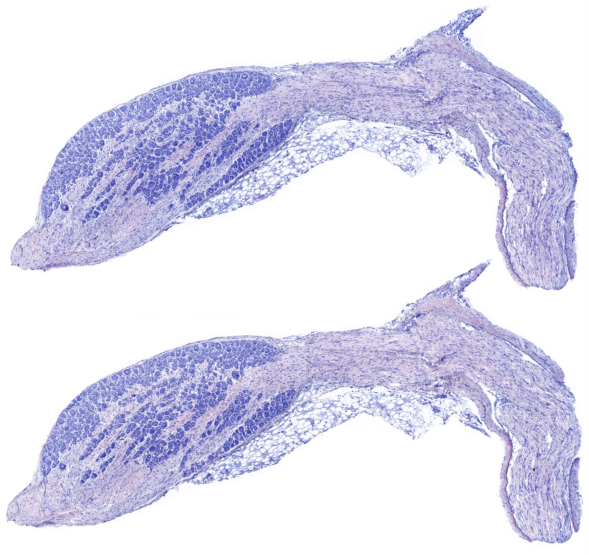
点击图片放大 · 本地概览
MHS 285-286 Dorsal Root Ganglion
脊神经节（甲苯胺蓝与髓鞘染色）
Toluidine Blue/Myelin Stain
本地概览
4044×3807
图像 © Histology Guide 及/或原始贡献者 · 非商业教育用途，经许可保存；原页面链接见下方
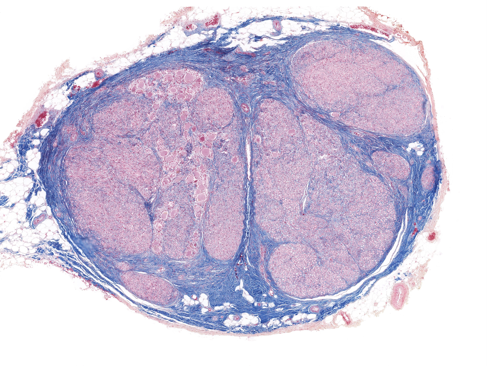
点击图片放大 · 本地概览
MH 051 Dorsal Root Ganglion
脊神经节（阿赞染色）
Azan
本地概览
4365×3285
图像 © Histology Guide 及/或原始贡献者 · 非商业教育用途，经许可保存；原页面链接见下方
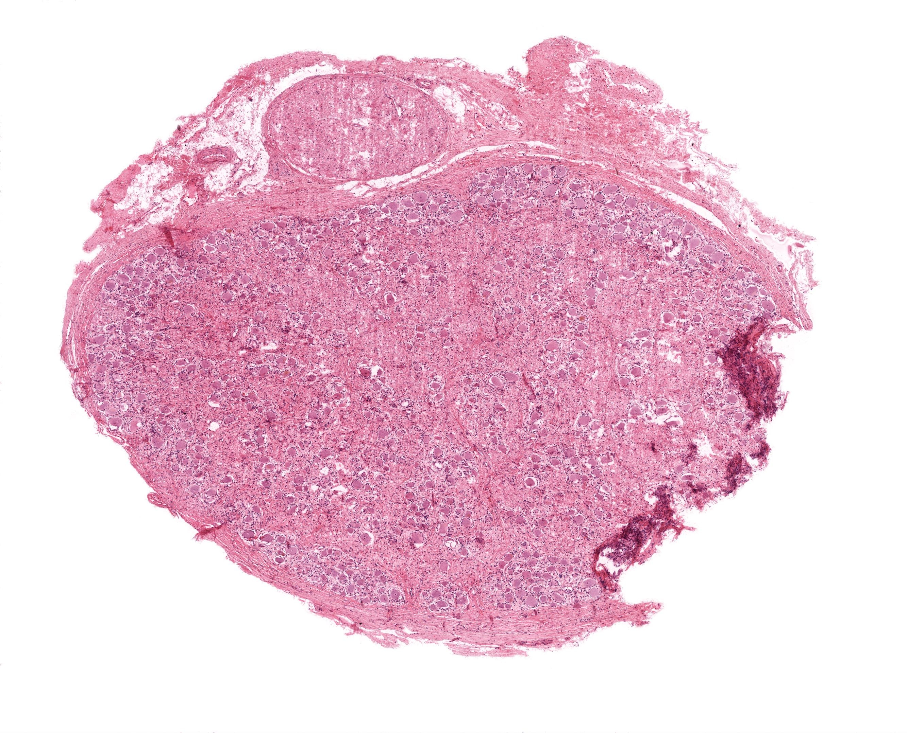
点击图片放大 · 本地概览
MH 050 Dorsal Root Ganglion
脊神经节
H&E
本地概览
2667×2158
图像 © Histology Guide 及/或原始贡献者 · 非商业教育用途，经许可保存；原页面链接见下方
交感神经节
Sympathetic Ganglion
- 节细胞胞体较小，分布较均匀，突起多而短。
- 节细胞为多极神经元，核偏位，胞质内常见色素颗粒。
- 节内可见散在的小型细胞，胞质着色浅。
- 节细胞之间散布大量无髓神经纤维。
低倍镜先找胞体较小、分布分散的节细胞
高倍镜再确认多极形态与偏位核
相关标本 · 2
点击图片放大 · 本地概览
MH 047 Spinal Cord
脊髓与脊神经节
Sympathetic Ganglion
H&E
本地概览
4440×1990
图像 © Histology Guide 及/或原始贡献者 · 非商业教育用途，经许可保存；原页面链接见下方

点击图片放大 · 本地概览
MH 059 Sympathetic Ganglion
交感神经节
H&E
本地概览
4607×11372
图像 © Histology Guide 及/或原始贡献者 · 非商业教育用途，经许可保存；原页面链接见下方
副交感神经节
Parasympathetic Ganglion
- 节细胞胞体大，位于器官壁内或器官旁。
- 节细胞数量少，散在于结缔组织与平滑肌之间。
- 节细胞多为多极神经元，核大而圆。
- 常见于食管、结肠和胰腺等器官。
低倍镜先在器官壁内找孤立散在的大胞体
高倍镜再确认核圆而核仁明显
相关标本 · 3

点击图片放大 · 本地概览
MH 109 Esophagus
食管（副交感神经节）
Parasympathetic Ganglion
H&E
本地概览
3701×2182
图像 © Histology Guide 及/或原始贡献者 · 非商业教育用途，经许可保存；原页面链接见下方

点击图片放大 · 本地概览
MH 123 Colon
结肠（副交感神经节）
Parasympathetic Ganglion
H&E
本地概览
3744×1101
图像 © Histology Guide 及/或原始贡献者 · 非商业教育用途，经许可保存；原页面链接见下方
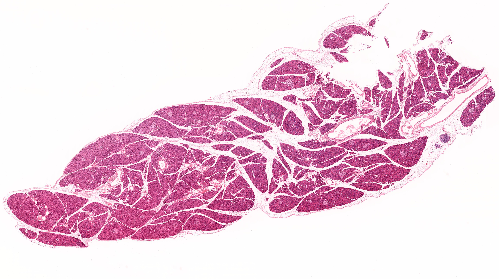
点击图片放大 · 本地概览
MHS 211 Pancreas
胰腺（副交感神经节）
Parasympathetic Ganglion
H&E
本地概览
4309×2421
图像 © Histology Guide 及/或原始贡献者 · 非商业教育用途，经许可保存；原页面链接见下方
周围神经
Peripheral Nerve
- 神经干外包神经外膜，内含多个神经纤维束。
- 每个纤维束外包神经束膜，束内纤维间有神经内膜。
- 纵切面神经纤维呈波浪状排列，可见施万细胞核。
- 横切面神经纤维呈圆形，髓鞘呈空泡状环。
低倍镜先找成束排列的波浪状纤维或圆形断面
高倍镜再确认神经束膜与施万细胞核
相关标本 · 3
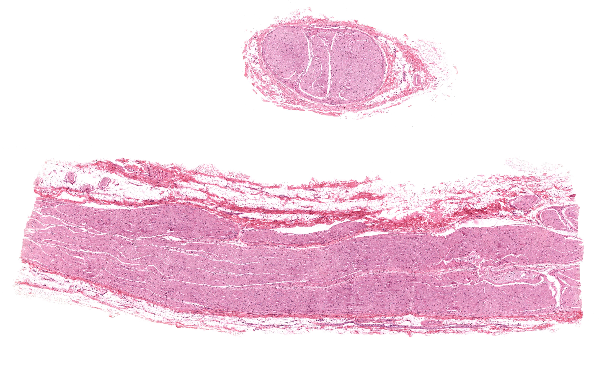
点击图片放大 · 本地概览
MH 052 Peripheral Nerve
周围神经（纵切与横切）
Longitudinal and Cross-section
H&E
本地概览
4560×2794
图像 © Histology Guide 及/或原始贡献者 · 非商业教育用途，经许可保存；原页面链接见下方
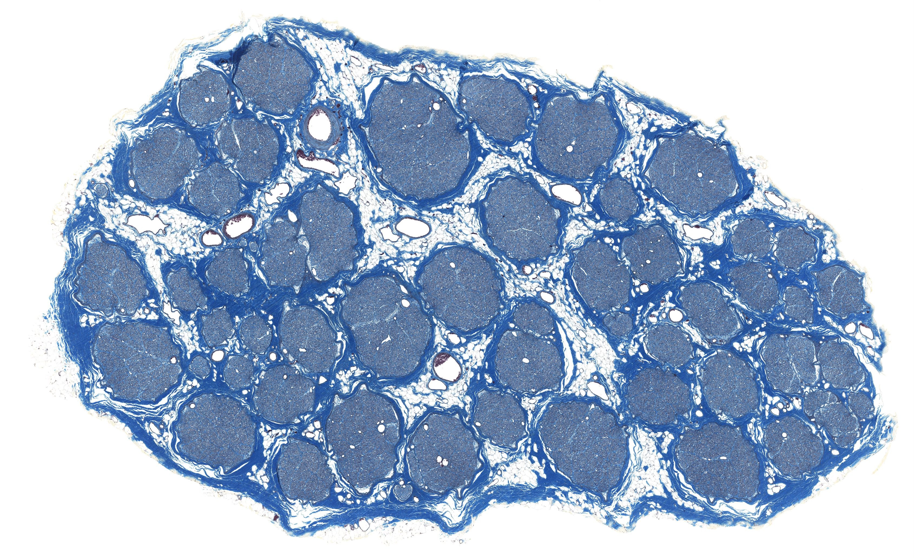
点击图片放大 · 本地概览
MHS 239 Peripheral Nerve
周围神经（马松三色）
Masson's Trichrome
本地概览
3378×2066
图像 © Histology Guide 及/或原始贡献者 · 非商业教育用途，经许可保存；原页面链接见下方
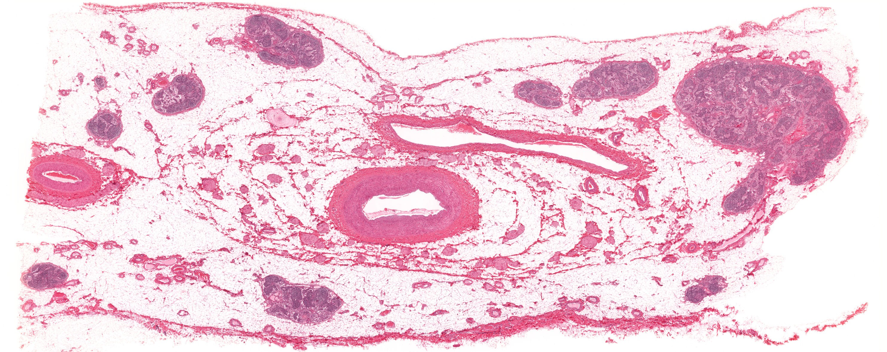
点击图片放大 · 本地概览
MH 024 Mesentery
肠系膜（神经与环层小体）
Peripheral Nerve
H&E
本地概览
2970×1181
图像 © Histology Guide 及/或原始贡献者 · 非商业教育用途，经许可保存；原页面链接见下方
感觉神经末梢
Sensory Nerve Endings
- 触觉小体位于真皮乳头内，呈卵圆形并有横列细胞。
- 环层小体位于真皮深层，由多层同心圆板层构成。
- 游离神经末梢分布于表皮内，感受痛觉与温度觉。
- 肌梭与腱梭感受肌肉的牵张状态。
低倍镜先找真皮乳头内或皮下组织中的卵圆形结构
高倍镜再确认同心圆板层或横列细胞
相关标本 · 4
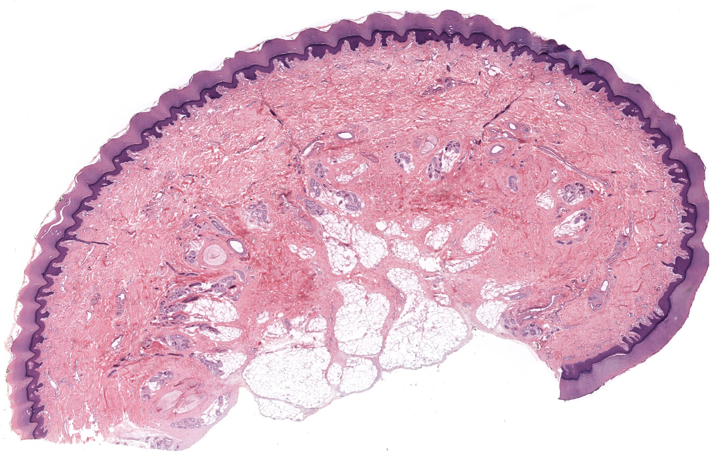
点击图片放大 · 本地概览
MH 091 Thick Skin
厚皮（触觉小体与环层小体）
Meissner and Pacinian Corpuscles
H&E
本地概览
2788×1791
图像 © Histology Guide 及/或原始贡献者 · 非商业教育用途，经许可保存；原页面链接见下方
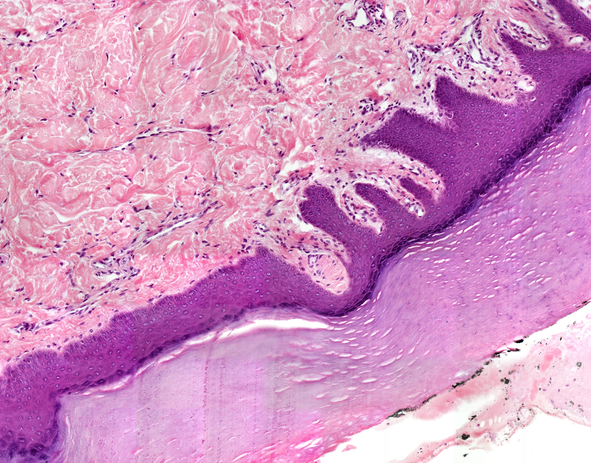
点击图片放大 · 本地概览
MH 091ahr Thick Skin
厚皮（触觉小体）
Meissner Corpuscle
H&E
本地概览
3868×3029
图像 © Histology Guide 及/或原始贡献者 · 非商业教育用途，经许可保存；原页面链接见下方
MH 024 Mesentery
肠系膜（神经与环层小体）
Pacinian Corpuscle
H&E
本地概览
2970×1181
图像 © Histology Guide 及/或原始贡献者 · 非商业教育用途，经许可保存；原页面链接见下方
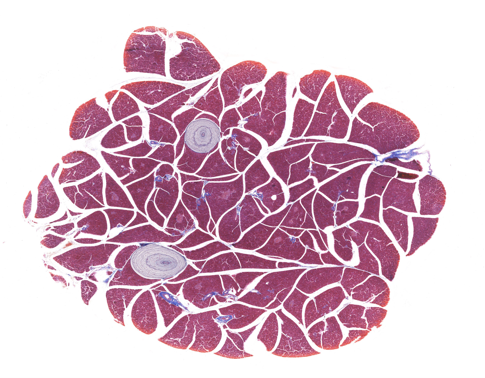
点击图片放大 · 本地概览
MHS 294 Pancreas
胰腺（马松三色，环层小体）
Pacinian Corpuscle
Masson's Trichrome
本地概览
3277×2558
图像 © Histology Guide 及/或原始贡献者 · 非商业教育用途，经许可保存；原页面链接见下方
本章电镜照片
23 张 · 需在线查看
电镜照片 23 张（在线查看）
自测
10 题 · 自编
先自己回答，再点“显示答案”。标记为易错的项目会进入复习模式。
尼氏体存在于神经元的哪些部位？
概念
胞体和树突内，轴突内没有。
脊髓灰质前角主要含哪类神经元？
识别
大型多极运动神经元。
脊神经节细胞属于哪一类神经元？
概念
假单极神经元。
脊神经节细胞周围包绕的一层细胞叫什么？
识别
卫星细胞。
小脑皮质由哪三层构成？
概念
分子层、浦肯野细胞层和颗粒层。
周围神经纵切面上神经纤维呈什么形态？
识别
呈波浪状走行的细长纤维，可见施万细胞核。
环层小体的结构特点是什么？
识别
由多层同心圆排列的板层构成，位于真皮深层。
脊神经节与交感神经节的节细胞有何不同？
对比
脊神经节细胞大而圆并成群，交感神经节细胞小而分散、多极。
中枢神经系统的灰质与周围神经的神经节在结构上有何不同？
对比
灰质无结缔组织分隔，神经节外有结缔组织被膜。
神经胶质细胞的主要功能是什么？
概念
支持、绝缘、营养和保护神经元。